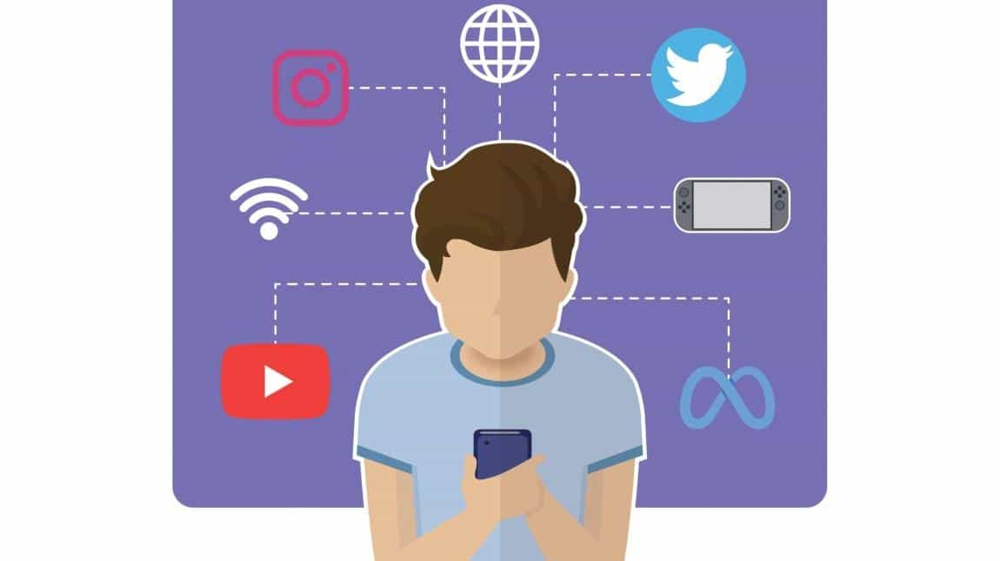

Teknoloji Bağımlılığı: Kontrol Kimde?
Telefon, tablet ve bilgisayar hayatımızı kolaylaştırıyor.
Ancak aşırı kullanım; dikkat dağınıklığı, uyku problemleri
ve sosyal hayattan kopmaya neden olabilir.
Teknoloji Bağımlılığının Belirtileri
- Telefonu sürekli kontrol etme isteği
- Ekran süresi artınca huzursuz hissetme
- Sosyal hayattan uzaklaşma
- Uyku düzeninin bozulması

Teknoloji Bağımlılığından Nasıl Kurtulabiliriz?
- Günlük ekran süresi için zaman sınırı koymak
- Yatmadan en az 1 saat önce telefonu bırakmak
- Bildirimleri kapatmak
- Spor ve açık hava aktiviteleri yapmak
- Aile ve arkadaşlarla yüz yüze vakit geçirmek
- Telefonu sürekli yanında taşımamak